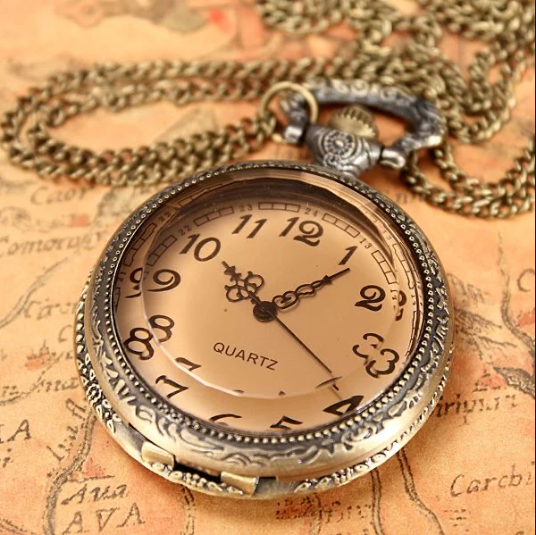
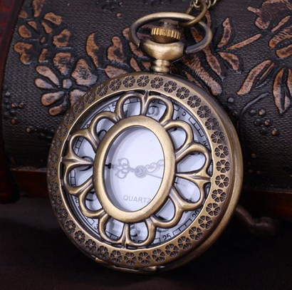
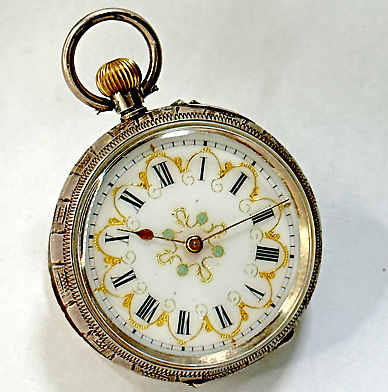
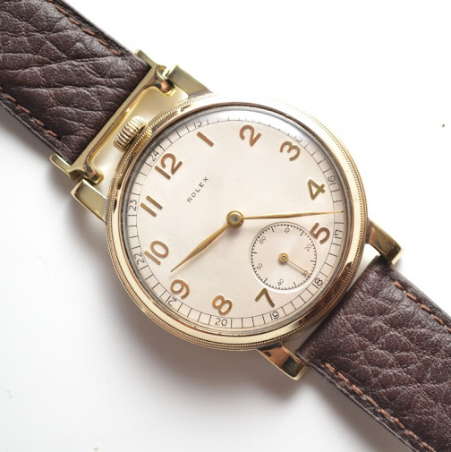

Saxophone's Chronographs offers the finest collection of clocks, wristwatches, pocketwatches and stopwatches available in waterdeep.
Commitment to Luxury.

Elegant, durable design by expert artificers.

Finely manufactured, fully customizable casing to complement any aesthetic.

Objective, rigid accuracy down to the millisecond.

Available in every fit, in every style, for every soul.
I do firmly believe in the importance of a strong sense of time. Saxophone's has equipped me with such
a sense, and for that, they hold the favor of the Morninglord.
-Father Gabriel Ghentilara, head of the Spires of the Morning
Browse our selection!
Browse through hundreds of customizable options here.